Vue de J1 (iso, lacet 0.0 B), J1 Parasite torche allumée, J2 de chaque classe, de profil. etoile = aujourd'hui (voie a) ; rond12 = occluder rond du torse (voie c) ; sans = aucune ombre propre (le capteur de la voie b, mais sans ombre au sol) ; couche = l'étoile gardée, invisible au capteur si le moteur le permet (voie b). Découpe 240×240 à 1:1 (le corps et son ombre au sol), puis loupe ×3.
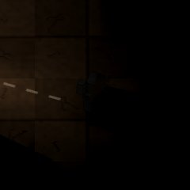 allumés hors étoile : 0 (à 0 px au plus du corps) |
allumés hors étoile : 683 (à 54 px au plus du corps) |
allumés hors étoile : 1600 (à 54 px au plus du corps) |
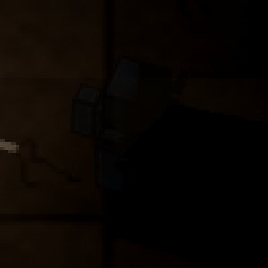 allumés hors étoile : 4 (à 11 px au plus du corps) |
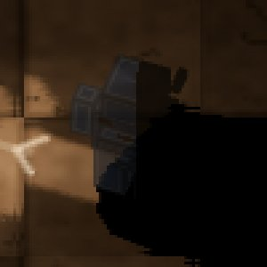 allumés hors étoile : 0 (à 0 px au plus du corps) |
allumés hors étoile : 7350 (à 297 px au plus du corps) |
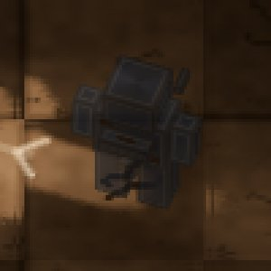 allumés hors étoile : 23456 (à 297 px au plus du corps) |
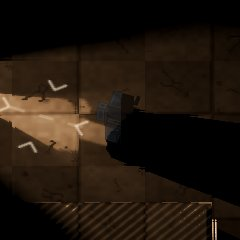 allumés hors étoile : 2 (à 9 px au plus du corps) |
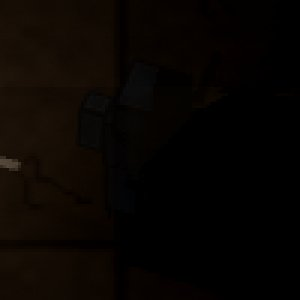 allumés hors étoile : 0 (à 0 px au plus du corps) |
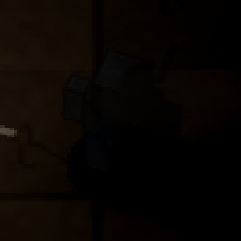 allumés hors étoile : 1176 (à 57 px au plus du corps) |
allumés hors étoile : 2265 (à 57 px au plus du corps) |
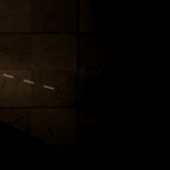 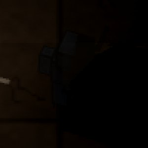 allumés hors étoile : 6 (à 13 px au plus du corps) |
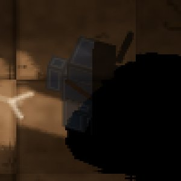 allumés hors étoile : 0 (à 0 px au plus du corps) |
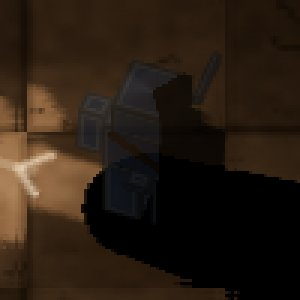 allumés hors étoile : 11760 (à 297 px au plus du corps) |
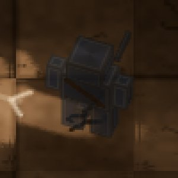 allumés hors étoile : 27792 (à 297 px au plus du corps) |
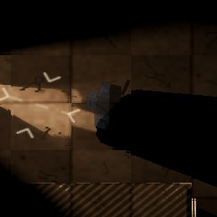 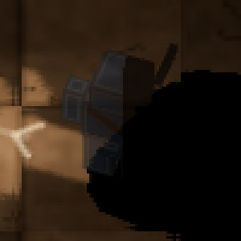 allumés hors étoile : 0 (à 0 px au plus du corps) |
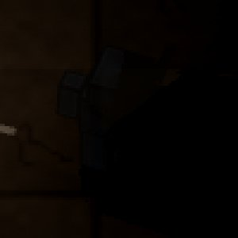 allumés hors étoile : 0 (à 0 px au plus du corps) |
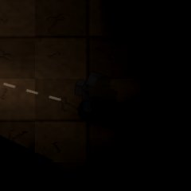 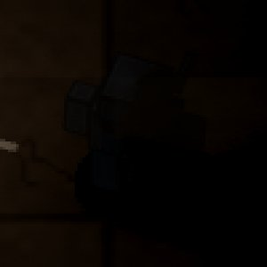 allumés hors étoile : 1224 (à 57 px au plus du corps) |
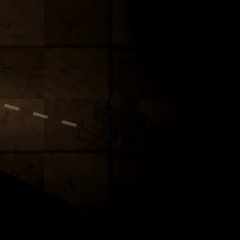 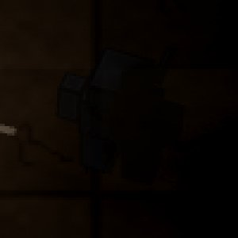 allumés hors étoile : 2380 (à 57 px au plus du corps) |
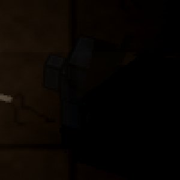 allumés hors étoile : 4 (à 10 px au plus du corps) |
allumés hors étoile : 0 (à 0 px au plus du corps) |
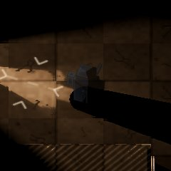 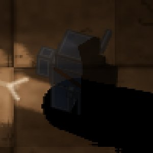 allumés hors étoile : 12735 (à 297 px au plus du corps) |
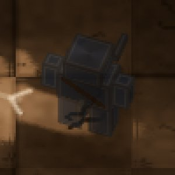 allumés hors étoile : 28875 (à 297 px au plus du corps) |
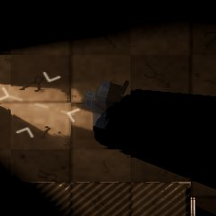 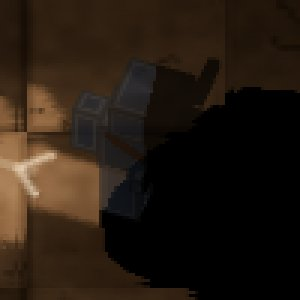 allumés hors étoile : 1 (à 7 px au plus du corps) |
allumés hors étoile : 0 (à 0 px au plus du corps) |
allumés hors étoile : 984 (à 56 px au plus du corps) |
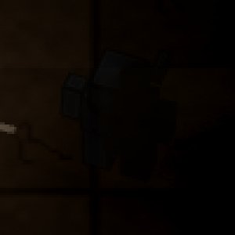 allumés hors étoile : 2073 (à 56 px au plus du corps) |
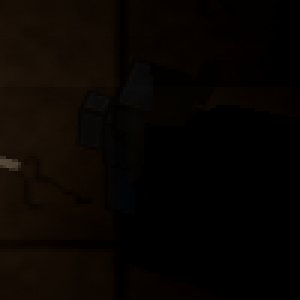 allumés hors étoile : 0 (à 0 px au plus du corps) |
allumés hors étoile : 0 (à 0 px au plus du corps) |
allumés hors étoile : 9687 (à 297 px au plus du corps) |
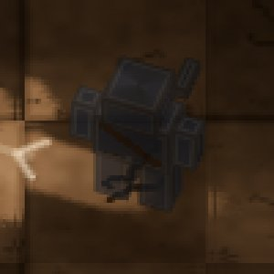 allumés hors étoile : 25784 (à 297 px au plus du corps) |
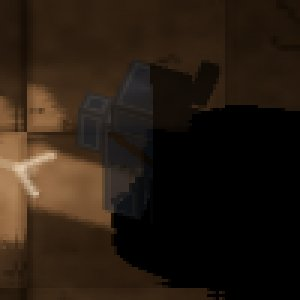 allumés hors étoile : 0 (à 0 px au plus du corps) |
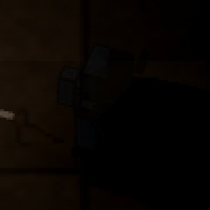 allumés hors étoile : 0 (à 0 px au plus du corps) |
allumés hors étoile : 814 (à 56 px au plus du corps) |
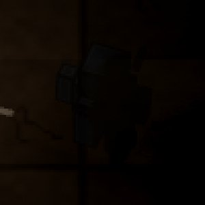 allumés hors étoile : 1784 (à 56 px au plus du corps) |
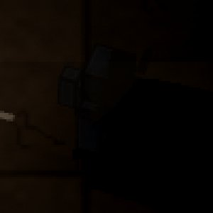 allumés hors étoile : 4 (à 12 px au plus du corps) |
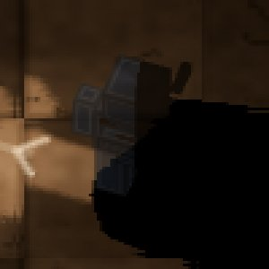 allumés hors étoile : 0 (à 0 px au plus du corps) |
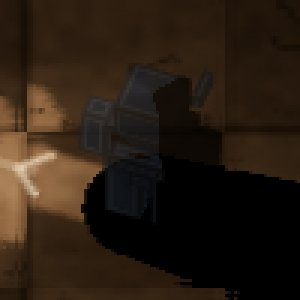 allumés hors étoile : 8866 (à 297 px au plus du corps) |
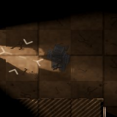 allumés hors étoile : 25003 (à 297 px au plus du corps) |
allumés hors étoile : 0 (à 0 px au plus du corps) |
allumés hors étoile : 0 (à 0 px au plus du corps) |
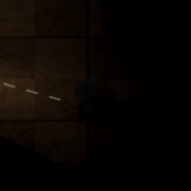 allumés hors étoile : 1151 (à 57 px au plus du corps) |
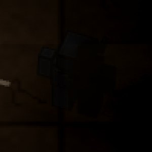 allumés hors étoile : 2306 (à 57 px au plus du corps) |
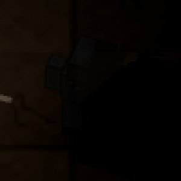 allumés hors étoile : 4 (à 12 px au plus du corps) |
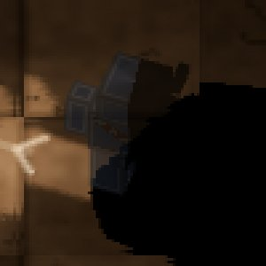 allumés hors étoile : 0 (à 0 px au plus du corps) |
allumés hors étoile : 11949 (à 297 px au plus du corps) |
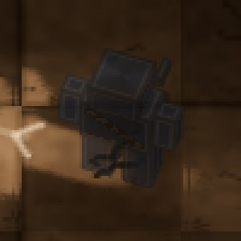 allumés hors étoile : 27991 (à 297 px au plus du corps) |
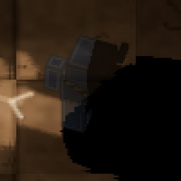 allumés hors étoile : 0 (à 0 px au plus du corps) |
allumés hors étoile : 0 (à 0 px au plus du corps) |
allumés hors étoile : 896 (à 56 px au plus du corps) |
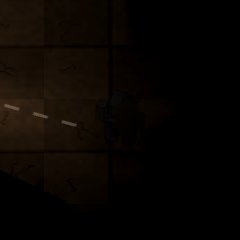 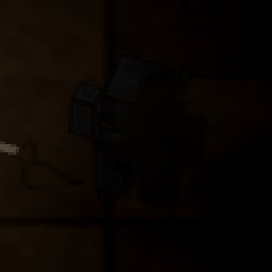 allumés hors étoile : 2057 (à 56 px au plus du corps) |
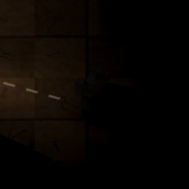 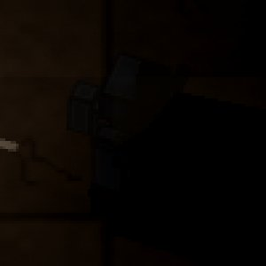 allumés hors étoile : 2 (à 10 px au plus du corps) |
allumés hors étoile : 0 (à 0 px au plus du corps) |
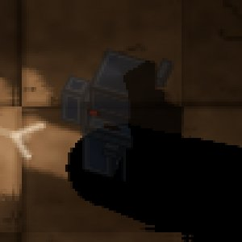 allumés hors étoile : 9138 (à 297 px au plus du corps) |
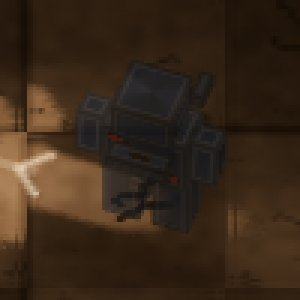 allumés hors étoile : 25273 (à 297 px au plus du corps) |
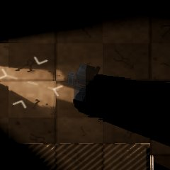 allumés hors étoile : 0 (à 0 px au plus du corps) |
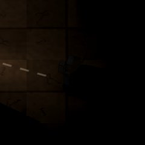 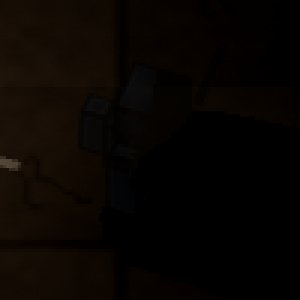 allumés hors étoile : 0 (à 0 px au plus du corps) |
allumés hors étoile : 836 (à 56 px au plus du corps) |
allumés hors étoile : 2011 (à 56 px au plus du corps) |
allumés hors étoile : 3 (à 14 px au plus du corps) |
allumés hors étoile : 0 (à 0 px au plus du corps) |
allumés hors étoile : 8254 (à 297 px au plus du corps) |
allumés hors étoile : 24376 (à 297 px au plus du corps) |
allumés hors étoile : 0 (à 0 px au plus du corps) |
allumés hors étoile : 0 (à 0 px au plus du corps) |
allumés hors étoile : 1095 (à 57 px au plus du corps) |
allumés hors étoile : 2108 (à 57 px au plus du corps) |
allumés hors étoile : 9 (à 15 px au plus du corps) |
allumés hors étoile : 0 (à 0 px au plus du corps) |
allumés hors étoile : 11248 (à 297 px au plus du corps) |
allumés hors étoile : 27371 (à 297 px au plus du corps) |
allumés hors étoile : 2 (à 7 px au plus du corps) |
allumés hors étoile : 0 (à 0 px au plus du corps) |
allumés hors étoile : 593 (à 54 px au plus du corps) |
allumés hors étoile : 1737 (à 54 px au plus du corps) |
allumés hors étoile : 3 (à 15 px au plus du corps) |
allumés hors étoile : 0 (à 0 px au plus du corps) |
allumés hors étoile : 6988 (à 297 px au plus du corps) |
allumés hors étoile : 23032 (à 297 px au plus du corps) |
allumés hors étoile : 2 (à 10 px au plus du corps) |